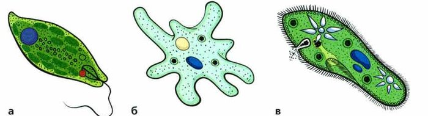
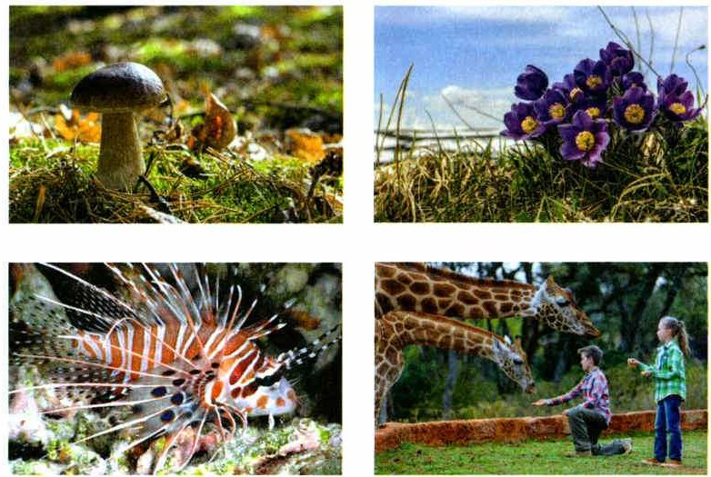
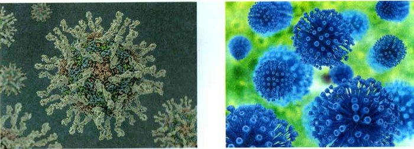
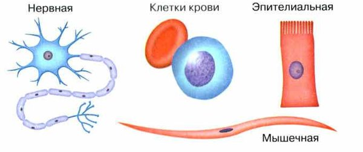
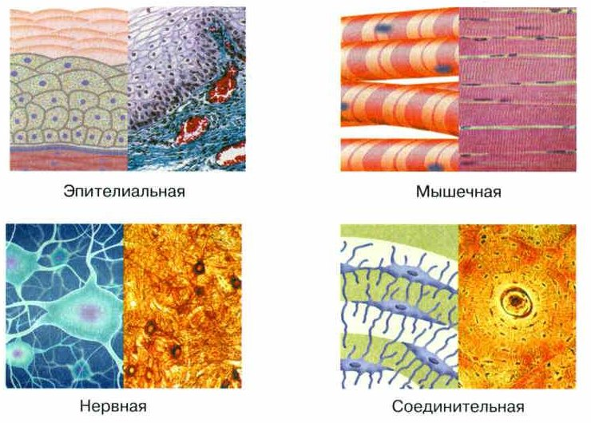
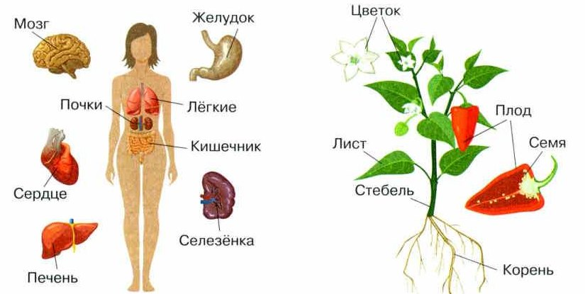
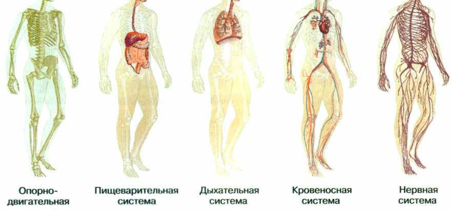
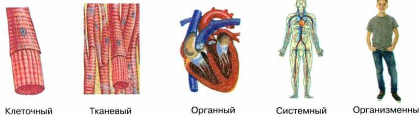
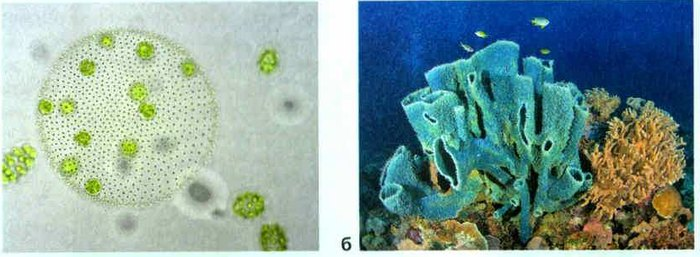

Понятие об организме
Живые тела природы называют организмами. Они бывают самыми разными: по форме, окраске, размеру. А ещё они различаются тем, как устроены их клетки.
Есть совсем крошечные организмы — из одной-единственной клетки. Это одноклеточные (рис. 34). Глазом их почти не видно: нужна лупа, а лучше микроскоп. Одноклеточные есть среди растений, животных и грибов. И все бактерии — одноклеточные.
А ещё есть многоклеточные организмы — их тело состоит из огромного числа клеток (рис. 35).
Клетка — главная единица строения и жизни всех организмов. Кроме вирусов: у них клеток нет (рис. 36). Вне клетки вирус не проявляет никаких свойств живого. И только попав в клетку другого организма, начинает размножаться — с помощью частей этой клетки.
Тела живой природы называют организмами. Они разнообразны по форме, окраске, размерам и другим признакам. Различаются они по особенностям клеточного строения.
Есть очень маленькие организмы, состоящие только из одной клетки. Их называют одноклеточными (рис. 34). Практически все они невидимы для глаза человека, и, чтобы их рассмотреть, нужны оптические приборы — лупа, а лучше микроскоп. Одноклеточные организмы есть среди растений, животных и грибов. К ним также относятся все бактерии.
Кроме одноклеточных в природе есть и многоклеточные организмы (рис. 35). Так их назвали потому, что тела этих организмов состоят из большого количества клеток.
Клетка является основной структурной и функциональной единицей всех живых организмов, за исключением вирусов, которых относят к внеклеточным организмам (рис. 36). Но следует учитывать, что если вирус находится вне клетки, то он не проявляет никаких свойств живого. Только попав в клетку другого организма, вирус начинает проявлять признаки живого и в первую очередь размножаться, используя структуры клетки-хозяина.



1. Почему одноклеточных почти невозможно увидеть без приборов? Какие приборы нужны?
2. Почему вирусы — особые организмы?
Основные структуры организма: клетки, ткани, органы, системы органов
Клетка — основа строения и жизни растений, животных, грибов и бактерий. У всех клеток общий план строения. Но в многоклеточном организме клетки бывают разными: каждая делает свою работу (рис. 37).
Клетки, похожие по строению и делающие общую работу, вместе с веществом между ними образуют ткань.
У человека и животных четыре вида тканей: эпителиальная (покровная), соединительная, мышечная и нервная (рис. 38). Каждая устроена по-своему и делает свою работу: защищает, служит опорой, питает, переносит вещества, сокращается.
Ткани образуют органы (от греч. органон — орудие, инструмент). Орган — часть многоклеточного организма с особым строением, которая делает определённую работу. Корень, лист, цветок — органы растений; сердце, печень, лёгкие — органы животных (рис. 39).
У сложных организмов органы объединены в системы органов. У человека те же системы, что у млекопитающих: покровная, опорно-двигательная, дыхательная, кровеносная, пищеварительная, выделительная и другие. Каждая система — группа органов с общей работой (рис. 40).
Все системы органов вместе — это целый многоклеточный организм.
Клетка — основа строения и жизнедеятельности организмов: растений, животных, грибов и бактерий. Для всех клеток характерен общий план строения, но клетки многоклеточных организмов могут различаться как у разных организмов, так и в составе одного организма. Это связано с тем, что каждая клетка выполняет определённые функции (рис. 37).
Клетки, сходные по строению, объединённые выполнением общей работы (функции), и межклеточное вещество, связывающее клетки, образуют ткани.
В многоклеточных организмах много разных тканей. Например, у человека и животных выделяют четыре типа тканей: эпителиальная (покровная), соединительная, мышечная и нервная (рис. 38). Все эти ткани выполняют специфические функции, обусловленные особенностями их строения, — защитную, опорную, питательную, транспортную, сократительную и др.
Ткани образуют органы (от греч. органон — орудие, инструмент). Орган — это часть многоклеточного организма, имеющая особое строение и выполняющая в нём определённую функцию. Например, корень, лист, цветок — органы растений; сердце, печень, лёгкие — органы животных (рис. 39).
Органы в сложно устроенных многоклеточных организмах объединены в особые комплексы — системы органов, которые обеспечивают жизнедеятельность таких организмов. Например, в организме человека выделяют те же системы органов, что и у млекопитающих: покровную, опорно-двигательную, дыхательную, кровеносную, пищеварительную, выделительную и др. Каждая система представляет собой группу органов, которые выполняют в организме какую-то общую функцию (рис. 40).
Совокупность всех систем органов образует целостный многоклеточный организм.



▲ Найди органы человека и органы растения.

много похожих клеток с одной работой: мышечная ткань
часть тела из разных тканей с особой работой: сердце
Ткань — материал. Орган — готовая деталь из этого материала.
3. Почему клетки в одном организме бывают разными?
4. Назови четыре вида тканей у человека и животных.
5. Приведи по два примера органов растений и органов животных.
Взаимосвязь структур организма
Клетки, которые вместе делают одну работу (например, обеспечивают движение), образуют ткани. Ткани образуют органы, органы объединяются в системы органов.
Пример. У человека мышечные клетки входят в мышечную ткань. Мышечная ткань образует мышцы. А мышцы входят в опорно-двигательную систему. Все системы органов вместе — целый организм. И все они работают на общий результат.
Если сломается один орган, пострадают и другие, а в конце концов — весь организм. Повредили у растения корень — перестаёт поступать вода. Листьям не хватает воды — в них перестают образовываться питательные вещества. А без них не растут все органы растения.
Значит, клетки, ткани, органы и системы органов связаны друг с другом. Они работают слаженно и составляют единое целое.
Клетки, которые вместе выполняют какие-либо функции, например обеспечивают движение, образуют ткани. Ткани образуют органы, которые объединяются в системы органов. Так, у человека мышечные клетки входят в состав мышечной ткани, мышечная ткань образует скелетные мышцы, которые входят в состав опорно-двигательной системы. Все системы органов составляют целый организм. Работа систем органов направлена на достижение результата, необходимого для всего организма.
Нарушение работы любого из органов отражается на функционировании других органов и в конечном счёте на жизнедеятельности всего организма. Например, при повреждении корня у растения нарушается поступление воды. При недостатке воды в листьях прекращается образование питательных веществ, которые необходимы для роста всех органов растения.
Таким образом, клетки, ткани, органы и системы органов в организме взаимосвязаны. Они функционируют согласованно и составляют единое целое.
6. Как связаны мышечная клетка и опорно-двигательная система?
7. Что будет с растением, если повредить корень? Расскажи цепочкой.
Уровни организации организма
В многоклеточном организме выделяют уровни организации: клеточный, тканевый, органный, системный (уровень систем органов) и организменный (рис. 41).
Все уровни работают слаженно — поэтому организм живёт и развивается как единое целое. И всегда отвечает на изменения внутри себя и вокруг.
Пример. Ты собираешь в лесу грибы и вдруг видишь змею. Мозг мгновенно понимает: опасность! В кровь выделяются гормоны стресса, сердце бьётся чаще, кровь приливает к тем частям тела, которым сейчас придётся действовать. Все системы органов работают на один результат — полезный для всего организма.
В строении многоклеточного организма выделяют следующие уровни организации: клеточный, тканевый, органный, системный (уровень систем органов), организменный (рис. 41). В результате слаженной работы структур всех уровней организации многоклеточный организм живёт и развивается как единое целое. Благодаря согласованной работе всех систем органов организм всегда отвечает на изменения, которые происходят в нём самом и окружающей его среде. Например, вы собирали в лесу грибы и увидели змею. Мозг мгновенно распознает опасность, в кровь выделятся гормоны стресса, сердце забьётся чаще, кровь от внутренних органов устремляется к тем частям тела, которым предстоит действовать. Вся работа систем органов постоянно направлена на достижение результата, полезного для всего организма.

8. Назови уровни организации многоклеточного организма по порядку.
9. Что происходит в организме, когда в лесу видишь змею? Какие органы работают?
Итоги и «Моя лаборатория»
Организмы: одноклеточные, многоклеточные, неклеточные · Уровни организации · Клетка · Ткань · Орган · Система органов · Организм
- Что представляют собой организмы? Какие они бывают по клеточному строению?
- Какова роль клеток в жизни одноклеточных и многоклеточных организмов?
- Что такое ткань?
- Почему органы в многоклеточном организме работают согласованно?
- От чего зависит наличие различных органов у растений и животных?
- Назовите основные уровни организации многоклеточного организма.
Чем обусловлено разнообразие формы и размеров различных клеток, тканей, органов и систем органов в многоклеточном организме?
Изучив текст параграфа и дополнительные источники информации, приведите примеры различных организмов и заполните таблицу: одноклеточные — многоклеточные — внеклеточные.
- Одноклеточные: эвглена, амёба, инфузория (рис. 34), бактерии.
- Многоклеточные: гриб, фиалка, рыба, жираф (рис. 35) — и твои: Люся, Юкси, муравьи, полоз, денежное дерево.
- Внеклеточные: вирусы (рис. 36).
Слово «организм» (от лат. организо — устраиваю, придаю стройный вид) ввёл Аристотель. Он заметил: всё живое устроено чётко и строго — в отличие от неживого.
Есть одноклеточные, которые живут вместе — множеством клеток, похожим на многоклеточный организм. Например, вольвокс. Но их клетки живут независимо друг от друга, не образуют тканей и обычно могут размножаться сами. Поэтому это одноклеточные колониальные организмы (рис. 42, а).
Многоклеточные тоже бывают колониальными: несколько особей тесно связаны, у них общий обмен веществ. Это многие коралловые полипы, губки и другие (рис. 42, б).
Термин организм (от лат. организо — устраиваю, придаю стройный вид) был введён древнегреческим учёным Аристотелем. Он указал, что любое живое существо характеризуется чёткой и строгой организацией, в отличие от неживого.
Среди одноклеточных организмов особое место занимают организмы, состоящие из множества клеток, объединённые в некое подобие многоклеточного организма. К ним относятся, например, вольвокс, гониум, пандорина и др. В отличие от многоклеточных организмов, клетки в этих организмах обычно функционируют независимо друг от друга, не образуют тканей, сохраняют, как правило, способность к размножению. Так как они сохраняют клеточный уровень организации, их относят к одноклеточным колониальным организмам (рис. 42, а).
Многоклеточные организмы тоже могут образовывать колонии из нескольких особей, более или менее тесно связанных между собой и имеющих обычно общий обмен веществ и системы регуляции. К многоклеточным колониальным организмам относятся многие виды коралловых полипов, губок и др. (рис. 42, б).

Проверь себя
Нажимай по порядку — от самого маленького к целому организму.
Ошиблась — не страшно, попробуй другую кнопку.
Амёба
Одна клетка (рис. 34).
Юкси
Тело из огромного числа клеток.
Вирус
У вирусов клеток нет.
Бактерия
Все бактерии — одноклеточные.
Денежное дерево
Растение из множества клеток.
Полоз
У змеи есть ткани, органы и системы органов.
Сердце
Часть тела со своей работой.
Мышечная ткань
Похожие клетки с общей работой.
Нервная клетка
Одна клетка с отростками (рис. 37).
Дыхательная система
Группа органов для дыхания.
Лист растения
Орган растения.
Кровеносная система
Сердце и сосуды вместе.
1. Как называют организмы из одной клетки?
2. У кого нет клеточного строения?
3. Что такое ткань?
4. Что из этого — орган растения?
5. Сколько типов тканей выделяют у человека и животных?
6. Что будет, если повредить корень растения?
Расскажи вслух
Какие бывают организмы
- Одноклеточные — из одной клетки, почти не видны глазом (амёба, бактерии).
- Многоклеточные — из множества клеток (грибы, растения, животные).
- Неклеточные — вирусы: проявляют свойства живого только в чужой клетке.
Клетки, ткани, органы, системы органов
- Клетка — основа строения; клетки разные, потому что выполняют разную работу.
- Ткань — похожие клетки с общей функцией; у животных 4 типа тканей.
- Орган — часть организма со своей работой; органы объединяются в системы.
Организм — единое целое
- Уровни: клеточный, тканевый, органный, системный, организменный.
- Органы связаны: повреждён корень — нет воды — нет питательных веществ.
- Пример со змеёй: мозг, гормоны, сердце, мышцы работают вместе.